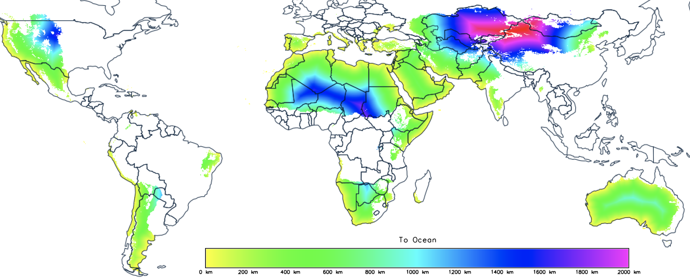
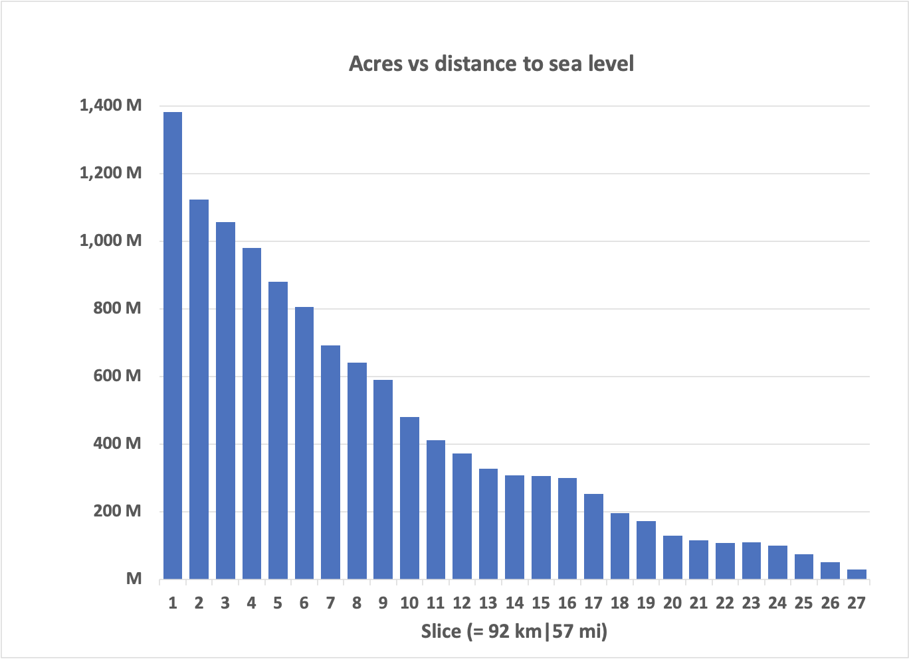
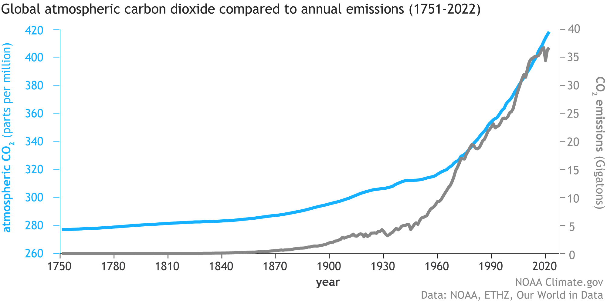

This solution now feels workable, but there are a lot of ragged ends. Among other things, I’ve mixed a lot of different units for energy, area, and water for expedience and clarity. These ought to be normalized, I suppose, but that’s a rote exercise for later. Plus, we’ve been talking about a single irrigated sugarcane farm in Western Australia, where irrigation enables agriculture. But any alleged “solution” needs to scale, and unlike the “first” solution, 1 this one relies on relatively finite energy sources. Plus, the scale here is beyond what most engineers would consider “large scale”. It needs to scale globally.
In this installment, let’s map the available land for this solution. We can calculate how large a carbon sink is possible from that number. This will tell us whether this solution (by itself) could put a real dent in the already-emitted carbon in our atmosphere. I approach this with the caveat that nothing we’ve done in the past 50 years has moved the needle, so this is a reasonably high bar to set. As we move toward carbon-free energy, we need to remove the carbon we add every year if we hope to achieve engineering net zero.
Getting the accessible number was somewhat of a challenge. I began with this paper 2 , which describes global climates according to temperature and precipitation. I then took a crash course on a graphical analysis package for geodata, GRASS GIS. I used this software to calculate the distance to the nearest ocean for each point on land, regardless of elevation. I then restricted the analysis to land classifications that would benefit from irrigation, specifically arid and temperate climates with at least one dry season. As a judgment, I eliminated tropical savannah ecosystems as being lashed to the seasons, but it could be beneficial to include them in the next iteration of the analysis.

It’s hard to tell from this map, but there’s a lot of arid land near the ocean:

This shows that, at a global level, there are 2 to 2.5 billion acres of arid land within about 100 miles of the ocean. In a future analysis, it will be helpful to analyze elevation changes, but let’s take that as the addressable area using this approach.
Based on last time 3 , we could expect to stabilize between 25 and 38 tonnes of atmospheric CO2 per hectare, so, roughly speaking, the system at full implementation would be able to remove between 20 and 30 gigatonnes of CO2 per year.
Is that a lot or a little? Here’s what we’ve been emitting to see if it’s worth pursuing.

Well, well, well. So, if fully implemented, this solution could put a massive dent in our carbon emissions while driving food and materials to an economic foundation in agricultural products.
If my crude financials are accurate, the cost to build a system would be about $15 trillion, nearly half of the U. S. national debt. A lot of money, but it would be an actual investment rather than a boondoggle expense.
I don’t expect these numbers to be correct, but they at least provide a starting point. They’re undoubtedly optimistic for the first run and probably pessimistic in the longer run as technology heads down the learning curve. But it’d do far more to address the climate control problem than anything we’ve done over the past few decades.
So, yes. Electrify everything. Avoid burning geologic carbon unless absolutely necessary. But, if we control the water that Earth already produces, we can put that carbon back underground while driving economic prosperity.
That’s a pretty good note to end this series on, isn’t it?
Until next time.
Earlier in this series: Part 1, Part 2, Part 3, Part 4, Part 5, Part 6, Part 7, Part 8, Part 9, Part 10
Beck HE, Zimmermann NE, McVicar TR, Vergopolan N, Berg A, Wood EF. Present and future Köppen-Geiger climate classification maps at 1-km resolution. Sci Data. 2018 Oct 30;5:180214. doi: 10.1038/sdata.2018.214. Erratum in: Sci Data. 2020 Aug 17;7(1):274. PMID: 30375988; PMCID: PMC6207062.